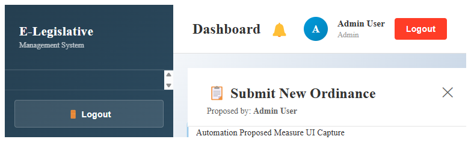
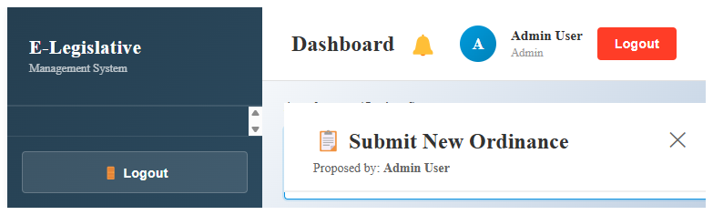
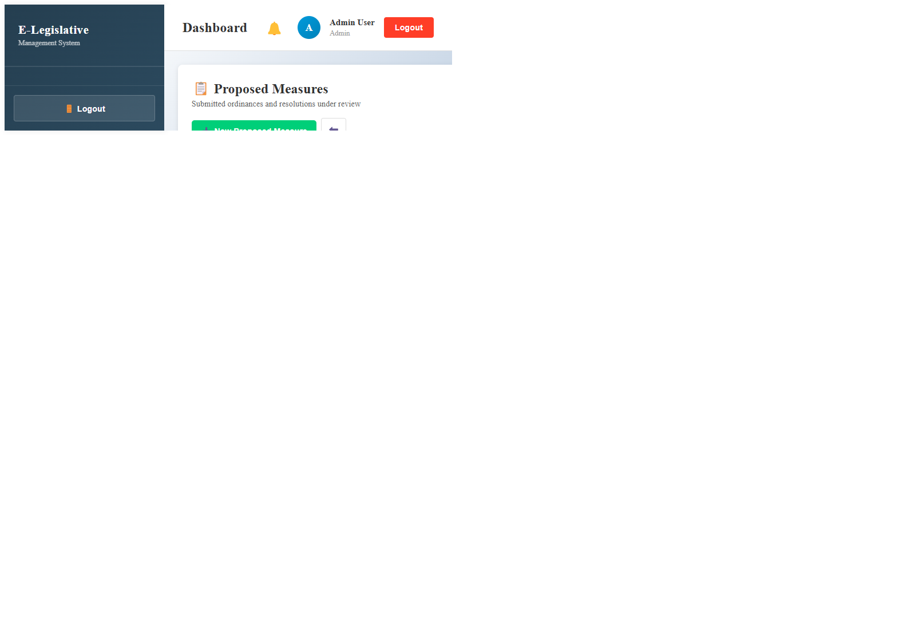
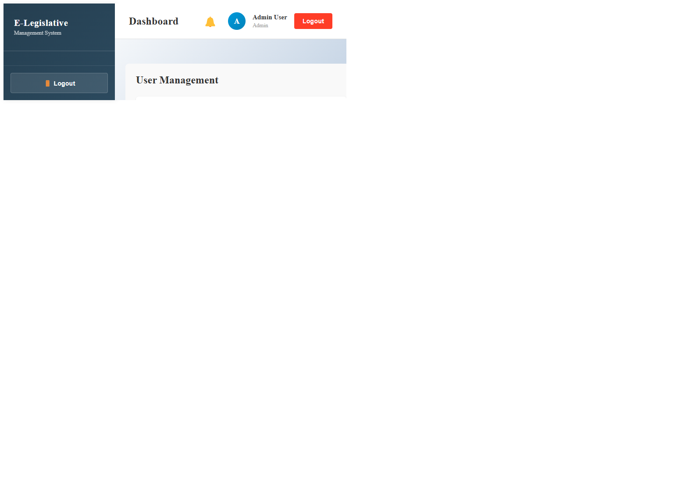
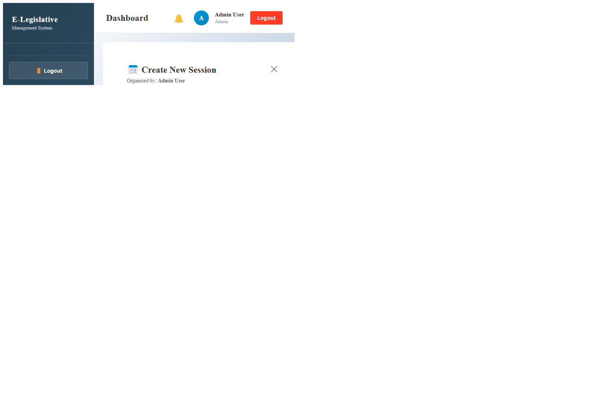
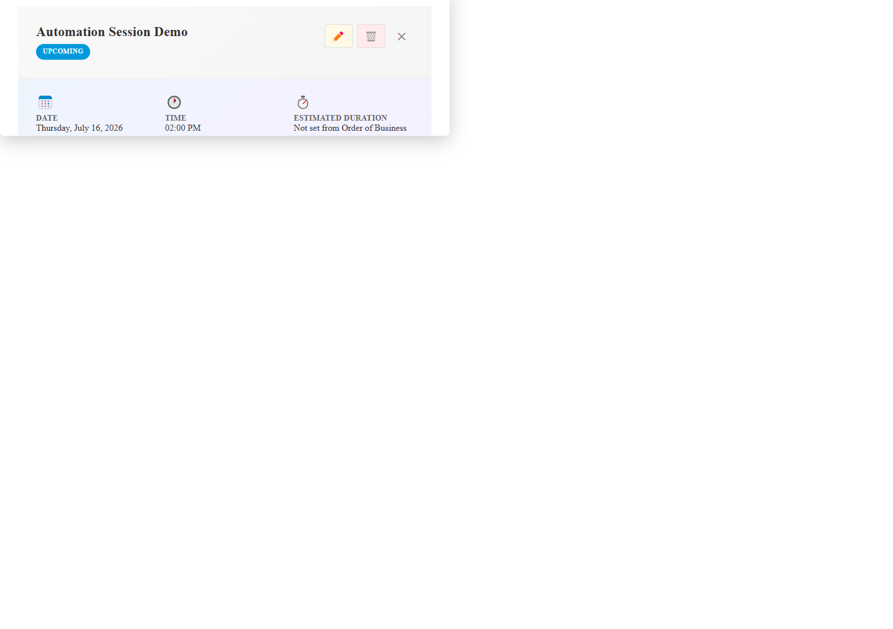
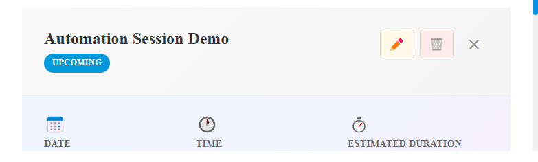

ELegislative User Manual
1. Purpose
This manual explains how to use the ELegislative system for day-to-day legislative operations, including:
- user access and roles
- ordinance and resolution workflows
- committee and session workflows
- live session viewing
- local recording and server upload
- common troubleshooting steps
2. Roles and Access
The system uses role-based access. Actual permissions may vary by your account configuration.
- Admin: full system management, user and configuration control.
- Secretary: manages records, sessions, minutes, and recording workflows.
- Vice Mayor: participates in leadership workflows and session operations.
- Councilor: authors and co-authors measures, joins sessions, participates in live and voting activities.
- Participant: joins assigned sessions and views allowed content.
2.1 Role Capability Summary
- Admin: create/edit users, full session and workflow administration, and most legislative lifecycle actions.
- Secretary: manage sessions, participants, minutes, order of business, recordings, and key workflow transitions.
- Vice Mayor: committee assignment and executive approval/rejection actions.
- Councilor: create/update proposed measures, submit to workflow, and cast votes.
- Participant: join allowed sessions and view permitted content only.
2.2 Workflow Modification Matrix
The matrix below reflects current role guards configured in backend routes.
| Workflow / Action | Roles Allowed to Modify |
|---|---|
| User Management: create/edit users | Admin |
| Sessions: create/edit session | Secretary, Admin |
| Sessions: delete session | Admin |
| Sessions: add participants / add from OOB | Secretary, Admin |
| Order of Business: create/update/reorder/status/documents | Secretary, Admin |
| Minutes: create/generate/transcribe/update/delete | Secretary, Admin |
| Proposed Measures: create draft | Councilor, Admin |
| Proposed Measures: update draft/content | Secretary, Councilor, Admin |
| Proposed Measures: delete item | Secretary, Admin |
| Proposed Measures: submit to Vice Mayor | Councilor, Admin |
| Proposed Measures: first/second reading | Secretary, Admin |
| Proposed Measures: assign committee | Vice Mayor, Secretary, Admin |
| Proposed Measures: committee report | Councilor, Committee Secretary, Admin |
| Proposed Measures: open/close voting | Secretary, Admin |
| Proposed Measures: cast vote | Councilor, Secretary, Admin |
| Proposed Measures: executive approval/rejection | Vice Mayor, Admin |
| Proposed Measures: post publicly / mark effective | Secretary, Admin |
| Votes module: create/close vote session, cast vote | Councilor, Secretary, Admin |
| Votes module: delete vote session | Admin |
| Reports: create/update | Councilor, Secretary, Admin |
| Reports: delete | Secretary, Admin |
| Committee setup: create committee | Vice Mayor, Admin |
| Committee setup: update committee | Assigned Chairperson, Vice Mayor, Admin |
| Committee setup: delete committee | Admin |
| Committee membership: add/remove members | Secretary, Admin |
2.3 Notes on Access Variations
- UI visibility can differ from API authority.
- Some actions require assignment context (for example, chairperson-specific updates).
- Local policy/configuration may further restrict permissions.
3. Signing In
- Open the ELegislative login page.
- Enter your account credentials.
- Click Sign In.
- If login fails, verify your credentials and account status, then contact Admin or Secretary if needed.
4. Main Areas
- Dashboard: summary metrics, recent activity, pending actions.
- Ordinances and Resolutions: create, submit, review, approve lifecycle.
- Committees: assignments, meetings, reports, workflows.
- Sessions: agenda, participants, order of business, live, recording.
- Notifications and Messages: updates and communication.
- Reports and Audit Logs: tracking and transparency.
4.1 Navigational Toolbar Guide
Use the left sidebar or top navigation toolbar (depending on layout) to move between modules.
- Dashboard: pending actions, recent records, and quick status indicators.
- Calendar: scheduled meetings/sessions, with Join Session and Watch Live quick actions.
- Ordinances and Resolutions: proposed measure lists, drafts, and workflow status.
- Committees: committee setup, membership, meetings, and recommendations.
- Sessions: agenda, participants, recording, and live panel.
- Order of Business: flow items, ordering, and OOB document records.
- Minutes: session minutes, transcripts, and recording links.
- Voting: vote sessions, ballot actions, and summaries.
- Reports: operational and legislative reports.
- Notifications and Messages: alerts, updates, and communication.
- User Management: create/edit users, assign roles, and set account status.
- Audit Logs: historical action trail for accountability.
Role note: Access visibility can differ per role. If a toolbar item is missing, your account may not have permission.
4A. Workflow: Creating a Proposed Measure and Resolution
4A.1 Create Draft
- Open Ordinances and Resolutions.
- Click Create New or New Proposed Measure.
- Select measure type: Ordinance or Resolution.
- Fill required fields: title, rationale/summary, legal basis (if required), and category.

4A.2 Set Author and Co-Authors
- Confirm the main author/proponent.
- Add co-authors when applicable.
- Save draft metadata.
4A.3 Attach Supporting Files
- Upload supporting documents such as draft text, committee notes, and references.
- Verify attachments appear correctly in the document list.

4A.4 Submit for Workflow
- Click Submit or Forward.
- Verify status changes from Draft to Submitted (or equivalent).
- Verify visibility in pending review queues.

4A.5 Committee to Session Path
- Committee reviews and records recommendation: APPROVE, REVISION, or REJECTION.
- Secretary includes recommended items in session agenda.
- Item proceeds to discussion/readings/voting and final status update.

4B. Workflow: Admin User Management (Create User)
4B.1 Open User Management
- Sign in using an Admin account.
- Open User Management.
- Click Create User or Add User.
4B.2 Enter User Information
- Fill required fields: full name, username/email, contact details (if required), and temporary password.
- Verify there are no duplicate usernames or emails.
4B.3 Assign Role and Save
- Select the correct role (Secretary, Vice Mayor, Councilor, Participant, or Admin when authorized).
- Set status to Active.
- Save the account.
4B.4 Validate Account
- Confirm the user appears in User Management list.
- Confirm role and status are correct.
- Instruct user to change password on first login if required.

5. Creating and Managing Sessions
5.1 Create a Session
- Open Sessions.
- Click Create Session.
- Fill required fields: title, date, time, location, and agenda.
- Save.

5.2 Edit a Session
- Open Sessions.
- Select the target session.
- Click Edit, update details, then save.
5.3 Session Details Tabs
Use tabs such as Details, Order of Business, Agenda, Recording, Ordinances, and Participants.
6. Joining and Managing Participants
6.1 Join a Session
- Open Session Details.
- Go to Participants or use Join Session.
- Click Join Session.
6.2 Participant Inclusion
- Users manually added to the session.
- Authors and co-authors of proposed measures, if enabled by workflow.
7. Committee Workflow
- Committee scheduling
- Deliberation and hearing
- Committee report drafting
- Recommendation outcome: APPROVE, REVISION, or REJECTION
- Submission to Secretary for next session flow
8. Live Session Workflow
8.1 Starting Live
- Open Session Details.
- Go to Recording tab.
- Click Start Live if your role is allowed.
- Confirm screen or window sharing when prompted.

8.2 Viewing Live
- Open the same session in another allowed account.
- Go to Recording tab.
- Wait for active live stream.
- Verify host label: Live started by: name.
8.3 Host Behavior Notes
- Single-tab sharing can produce black output when switching away.
- For stability, share a window or entire screen.
9. Local Recording Workflow
9.1 Start Recording
- Open Session Details and go to Recording tab.
- Click Start Local Recording.
- Confirm capture source in browser prompt.
- Wait for chunk and KB growth in Capture Diagnostics.
9.2 Stop and Save
- Click Stop and Save.
- Wait for finalization.
- Click Download local copy in recorder panel.
- Confirm file appears in browser downloads.

9.3 Attach to Server Minutes
If server sync is enabled, upload to session minutes happens after local finalization.
10. Recording the Active Live Session (Secretary)
- Secretary can watch the active host stream in Recording tab.
- When available, secretary recording captures the incoming live stream.
- If no incoming stream exists, recorder uses local capture fallback.
11. Calendar-Based Access
- Join Session opens the selected session.
- Watch Live opens Session Details on the Recording tab.
12. Minutes and Recordings
- Recordings are attached to session minutes records.
- If no minutes record exists, workflow may auto-create one on upload.
- Uploaded recordings are available in Attached Session Minutes.
13. Troubleshooting
13.1 Live shows black screen
- Host must share a valid window/screen.
- Avoid switching away from a single-tab share source.
- Verify session access and live diagnostics.
13.2 Recording diagnostics show 0 chunks
- Confirm recording really started.
- Confirm capture permissions were granted.
- Keep source active and visible.
13.3 File cannot open
- Record for several seconds before stopping.
- Confirm chunk/KB diagnostics increase.
- Use Download local copy from recorder panel.
13.4 401 Unauthorized
- Re-authenticate and verify token is valid.
- Verify role has access to requested action.
14. Best Practices
- Keep Session Details open during recording finalization.
- Record at least 5 to 10 seconds for validation.
- Use consistent role accounts for host and viewer testing.
- Prefer window or entire-screen capture for reliability.
15. Quick Checklist for Secretaries
Before session
- Verify session schedule, participants, agenda, and order of business.
During session
- Confirm host label and monitor diagnostics.
- Start recording and verify chunk growth.
After session
- Stop recording and click Download local copy.
- Confirm file opens and upload appears in minutes record.
16. Support and Escalation
- Capture diagnostics screenshot.
- Note role, session ID, and timestamp.
- Document exact steps and observed result.
- Attach browser console errors if available.